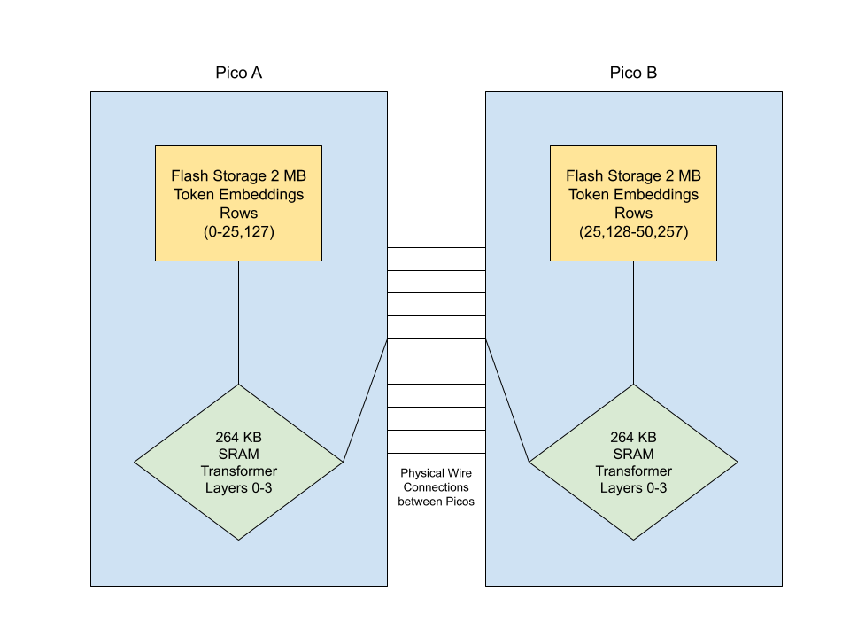

Pico LLM
PicoLLM is a tiny language model, modified from Microsoft Research's TinyStories project: a exploration of how small a model can be and still write coherent English. It uses their smallest published model (~3.7M parameters, trained to write simple children's stories) and splits it across two Raspberry Pi Pico microcontrollers that talk to each other over physical wires, so it can run on ~$20 of hardware. I want to push the limits of hardware and learn how inference can be split across various machines like in real data centers managed by companies like AWS, Meta, Microsoft, and CoreWeave. A fun and cheap way I thought of doign this was using the very microcontrollers I've been working with for the past year on embedded coding. This work was largely inspired by talking to engineers at Meta's event @Scale Netowrking and network engineers at Coreweave.

This project is currently being built but I've built a model of how the 3.7MB model is split into the flash and SRAM of two picos, the main point of this project is showing how communication can be done between these two machines to run inference, my future hopes are to scale to more than two devices as I have two more Picos I'm not using now.
I will update this page as I build more and figure more things out, stay tuned.